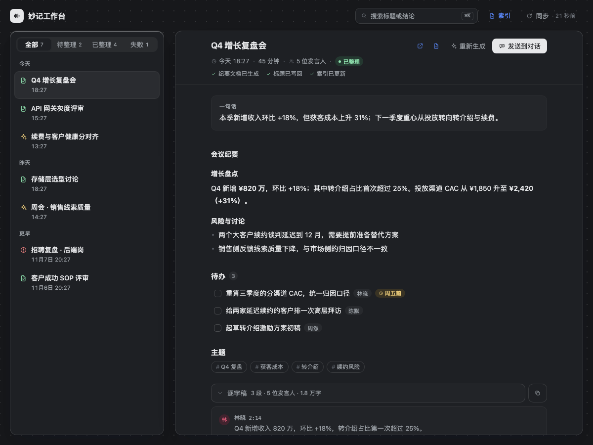

01
发现
每 60 秒查一次飞书妙记。新录音进本地收件箱，只认你自己的。
妙记工作台在后台发现你的飞书妙记，自动写出标题和完整纪要、落成飞书文档，再把每一场会登记进一张跨设备共享的索引表。你不用点按钮，也不用守着。
录音、转写、起标题、写纪要、建文档、记链接——每一步都不难，连起来就没人愿意做。妙记工作台把这条链子整条接走。
发现、生成、写回、记账。每一步都在后台发生，面板只负责让你看见结果。
每 60 秒查一次飞书妙记。新录音进本地收件箱，只认你自己的。
逐字稿交给模型，产出标题、一句话结论、分节纪要和待办。长会分段总结再合并。
建一篇「标题 · 妙记纪要」飞书文档，把标题写回妙记。你改过的名字不会被覆盖。
把「时间 / 标题 / 时长 / 妙记 / 纪要」写进索引表。它同时是跨设备账本。
发现即入队，但不是无脑跑。四道闸门替你判断这一条该不该自动处理；不够格的留在「待整理」，想跑再点。
autoProcesstrue总开关。关掉就退回纯手动。
autoProcessMinMinutes3 min挡住误触、语音备忘和几秒的测试录音。
autoProcessSettleMinutes5 min给转写一点沉淀时间，避免拿到残稿。
autoProcessSkipKeywords[]命中「面试」「1:1」这类词就不自动跑。
只自动处理启用这个版本之后新出现的妙记。升级当天不会把窗口里积压的历史一次跑完。
标题和结论都是模型写的，你第一次见到那个措辞是在看列表之后。所以这里不要求你「回忆」，只要求你「描述」。
关键词搜索要求「回忆」，
而这份内容只支持「识别」。
索引文档不只是目录，它是多台机器共用的共享状态。不做主从，哪台在线哪台跑；竞争只发生在建文档之前的一次收敛检查。
| 时间 | 标题 | 时长 | 妙记 | 纪要 |
|---|---|---|---|---|
| 11-11 18:27 | Q4 增长复盘会 | 45m | 打开 | 打开 |
| 11-11 15:27 | API 网关灰度评审 | 32m | 打开 | 打开 |
| 11-10 18:27 | 存储层选型讨论 | 58m | 打开 | 打开 |
逐字稿超过 2 万字就分段总结，再合并。正文由代码按时间段拼接，长度不受单次输出上限约束——不会悄悄只写前半场。
单块失败只会在那一节写「本节生成失败：原因」，其余照常，不会让整条记录失败。

工作台是一张 22px 点阵画布，上面浮着两张卡：左边收件箱，右边阅读器。浅色和深色都走 DSH token，跟宿主界面同一套皮肤。
22px 间距的圆点，两张卡之间留 22px 画布，不连成一张。
14px 小圆角、1px 发丝边、三层柔和阴影；深色下靠表面亮度差保持浮起。
颜色、阴影、字体全部取 DSH 变量，宿主换肤时不用改一行样式。
正文 13–17px，控件 10.5–13px；元信息保证 4.5:1 对比度。
需要 DSH Web、lark-cli ≥ 1.0.99，以及已登录的飞书 user 身份。插件不经过第三方服务器，数据只经过飞书 API 和你当前的模型。
没登录就先跑一次 lark-cli auth login。
lark-cli auth status
把路径换成你 clone 下来的目录。
dsh --profile desktop plugin add \ link:/path/to/dsh-lark-minutes-dashboard
左侧栏底部出现声波图标，点开就是工作台。第一次启动会先建索引文档。
下面这些是已知限制，写在 README 里，也写在这里。一个工具的可信度，取决于它敢不敢说自己做不到什么。
别人拥有、你只是参与的会，不会进列表。
窗口外的旧记录不再展示，但仍留在本地库，调大窗口就会回来。
飞书侧的事件被 lark-cli 预检拦截，所以发现走 60 秒轮询，不是实时。
换来的是「永远不会因为主设备不在手边而卡住」。
权限、模型、写入问题重试只会连着烧钱；转写没就绪是唯一例外。
标题是发现的主要依据；改名后新设备可能找不到并新建一份。